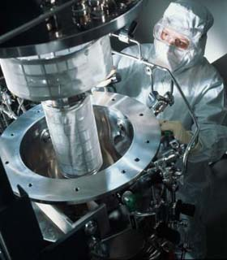

Levent B. Eribol
Eribol Müh. Dan. Eðt. Ltd. Þti.
Eylül 2007, Ankara
Giriþ:
Bilindiði üzere, ülkemizde çok sayýda sanayi ve yazýlým firmasý araþtýrma geliþtirme (Ar-Ge) ile uðraþmakta ve bu konuda harcamalar yapmaktadýr.
Fakat birçok kuruluþ, desteklerden haberdar olmadýklarýndan ya da günlük iþlerden fýrsat bulamadýklarýndan ya da yanlýþ proje ile yanlýþ þekilde baþvurduklarýndan bu desteklerden faydalan(a)mamaktadýr.
Destekler hakkýnda genel bir bilgi olarak;
Eðer,
Ürün Geliþtirme Konusunda;
- Firmada Mevcut Bir Ürünün Yeni Modellerinin Geliþtirilmesi (temel bir üründe yapýlan deðiþikliklerle yeni ürünler geliþtirilmesi veya mevcut bir ürünün yeni bir alana uygulanmasý için yapýlan uyum çalýþmalarý)
- Firma Ýçin Yeni Bir Ürün Geliþtirilmesi (benzerleri pazarda veya sektörde mevcut olup firmanýn ürün ailesinde olmayan bir ürünün geliþtirilmesi)
- Firma Ýçin Yeni Bir Ürün Platformu Geliþtirilmesi (kendisinden yeni modellerin türetilebileceði temel bir ürünün geliþtirilmesi)
- Ülke Ýçin Yeni Bir Ürün Geliþtirilmesi
- Dünya Ýçin Yeni Bir Ürün Geliþtirilmesi (yeni bir fikir odaðýnda dünya pazarlarýnda olmayan bir ürünün geliþtirilmesi)
Süreç Geliþtirme Konusunda;
- Maliyet Düþürücü veya Standart/Kalite Yükseltici Sonuçlarýn Elde Edilmesi Amacýyla Yeni Tekniklerin Geliþtirilerek Uygulanmasý
- Üretimle Ýlgili Olarak Yeni Bir Yöntem veya Teknoloji Geliþtirilmesi
ile ilgili faaliyetlerde bulunuyor, harcamalar yapýyorsanýz, üst limiti olmaksýzýn yaptýðýnýz harcamalarýn %60'ýna kadar hibe alabilirsiniz.
250 Kiþiden az çalýþanýnýz varsa ve daha önce Ar-Ge desteklerinden faydalanmadýysanýz, ilk 2 Ar-Ge projeniz için, her bir proje için 400.000YTL'lik Ar-Ge harcamalarýnýzýn %75'ini (300.000YTL) hibe, geri ödemesiz destek, alabilirsiniz. Ayrýca bu destek kapsamýnda alacaðýnýz her türlü danýþmanlýk hizmeti de desteklenmektedir.
Ýki projeniz desteklendikten sonra ya da 250'den fazla çalýþanýnýz varsa, proje büyüklüðü olmaksýzýn, proje bütçenizin %35-60 arasýnda bir oranda, uygun her projeniz için hibe alabilirsiniz.
Ayrýca, yine Ar-Ge projenizin finansmaný için %0 faizli 2.500.000$'a kadar kredi imkanýnýz da bulunmaktadýr.
Uzun zamandýr, bu tür projelerin desteklenmesi ile ilgilenen biri olarak, gördüðüm tablo, firmalarýn %99'u bu desteklerden haberdar deðildir.
Haberdar olan %1'lik kýsmýn da küçük bir kesimi desteklerden faydalanmýþ, diðerleri ise doðru bildikleri yanlýþlardan dolayý bu desteklerle ilgilenmemektedirler.
Firmalarla yapýlan toplantýlarda en sýk görülen yanlýþý sizlere aktarmak isterim; Ar-Ge Kavramý.
Doðru bilinen en büyük yanlýþ Ar-Ge kavramýnýn kendisidir.
AB, Amerika, Japonya gibi teknolojik ve ekonomik açýdan ileri ülkelerdeki Ar-Ge kavramý ile Türkiye'deki Ar-Ge kavramlarý birbirinden farklýdýr.
Geliþmiþ ülkelerde icatla (invention) sonuçlandýrýlacak, patente gidebilecek çalýþmalara Ar-Ge olarak bakýlýrken ülkemizde ise bu durum farklýdýr.
Ülkemizde, firmada mevcut bir ürünün yeni modellerinin geliþtirilmesi yani temel bir üründe yapýlan deðiþikliklerle yeni ürünler geliþtirilmesi veya mevcut bir ürünün yeni bir alana uygulanmasý için yapýlan uyum çalýþmalarý,
firma için yeni bir ürün geliþtirilmesi yani benzerleri pazarda veya sektörde mevcut olup firmanýn ürün ailesinde olmayan bir ürünün geliþtirilmesi,
firma için yeni bir ürün platformu geliþtirilmesi yani kendisinden yeni modellerin türetilebileceði temel bir ürünün geliþtirilmesi ve
tüm dünyada kabul edildiði üzere ülke için yeni bir ürün geliþtirilmesi veya dünya için yeni bir ürün geliþtirilmesi (icat yapýlmasý) Ar-Ge olarak kabul edilmektedir.
Bunun yaný sýra ürün geliþtirme haricinde, maliyet düþürücü veya standart-kalite yükseltici sonuçlarýn elde edilmesi amacýyla yeni tekniklerin geliþtirilerek uygulanmasý ve üretimle ilgili olarak yeni bir yöntem veya teknoloji geliþtirilmesi gibi süreç geliþtirmeye yönelik çalýþmalar da Ar-Ge'dir.
Ayrýca, çevre konusunda hammadde, enerji, su tüketimini ve atýk emisyonunu azaltýcý nitelikte yapýlacak tüm çalýþmalar (teknoloji geliþtirme), yenilenebilir enerji kaynaklarýnýn ile ilgili çalýþmalar da Ar-Ge olarak nitelendirilmektedir.
Özetle, ülkemizde de icat yapmak için gerçekleþtirilen çalýþmalar Ar-Ge olarak nitelendirilirken, ilaveten YENÝLÝK (innovation) çalýþmalarý da Ar-Ge olarak kabul edilmektedir.
TÜBÝTAK'ýn yaptýðý tanýmdan yola çýkarsak, FÝRMA BAZINDA yapýlan her yenilik bir Ar-Ge çalýþmasýdýr.
Sonuç olarak, firmanýzda daha önceden üretmediðiniz bir ürünü ya da ürettiðiniz mevcut ürünlerin daha üst modellerini ya da yurtdýþýnda olup ülkemizde olmayan bir ürünü üretebilmek için yapýlan tüm çalýþmalar, sektör ayrýmý olmaksýzýn (araþtýrma, tasarým, test, prototip üretimi vs..) Ar-Ge'dir.
Tesisinizde verimlilik ve maliyet azaltýcý yönde, yeni teknikler geliþtirmek için yapacaðýnýz tüm çalýþmalar Ar-Ge'dir.
Ayrýca, bilinenin aksine, ülkemizde bazýlarý dönem dönem açýlan, bazýlarý ise sürekli açýk olan destek programlarý bulunmaktadýr. Dönemsel programlara örnek olarak AB (Avrupa Birliði), Dünya Bankasý, Tarým Bakanlýðý destekli çeþitli programlar sayýlabilirken, sürekli açýk olan ve her an baþvuru yapýlan bilen programlarýn en önemlilerinden TÜBÝTAK ve DTM (Dýþ Ticaret Müsteþarlýðý) tarafýndan fonlanan ve yürütülen Ar-Ge destek programlarý sayýlabilir.
Birçok firma bu tür destekleri danýþmanlar aracýlýðý ile takip ederken, bazýlarý da kendi faaliyet alanlarýna göre ilgili destekleri takip etmektedirler. Özellikle dönemsel programlarýn iyi takip edilmesi ve kýsýtlý zaman aralýðýnda proje hazýrlanýp baþvurulmasý önemlidir. Zaman zaman gazetelerde de duyduðumuz "AB þu kadar para verdi, kullanýlamadýðý için para geri gitti" türü haberler bu gibi programlara iliþkindir. Fakat biz ve bizim gibi danýþmanlarýn sayýlarý arttýkça ve firmalarý sürekli bilinçlendirdikçe bu gibi durumlar artýk daha az yaþanmaktadýr. Bu da sevindiricidir.
Ar-Ge destekleri dönemsel deðildir. Yýlýn her günü baþvurulmasý mümkündür, sadece bazýlarý için deðerlendirme dönemleri mevcuttur, bu tarihler kaçýrýldýðýnda bir sonraki döneme kaymýþ olur (Birkaç aylýk bir gecikme yaþanýr).
Ülkemizde Ar-Ge'nin toplam milli gelirdeki payý geliþmiþ ülkelerin çok gerisindedir. Bu oran Japonya'da %2,9, Amerika'da %2,7, Almanya'da 2,4 iken, Türkiye'de % 1 civarýndadýr. 2010 yýlýnda ise bu oranýn %2'ye çýkarýlmasý hedeflenmektedir. Bu da söz konusu Ar-Ge desteklerinin devam edeceði ve fonun sürekli olarak artacaðý anlamýna gelmektedir.
Diðer bir konu ise bu tür desteklerin alýnmasý konusunda yaþanacak bürokrasi hakkýndaki önyargýlardýr.
Gerek dönemsel gerek sürekli programlar olsun hangisine baþvuracaksanýz baþvurun mutlaka istenilen standart formatta proje hazýrlanmasý ve ilgili kuruluþa sunulmasý gerekmektedir. Bu aþama birçok firma için sýkýntýlý ve uðraþtýrýcý olmakla birlikte bu konuda tecrübeli bazý firmalarda, oturmuþ bir yapýdýr. Projenin hazýrlanmasý aþamasýnda projenin, baþladýðý ilk günden bittiði son güne kadarki tüm aþamalar, yapýlacak harcama kalemleri, firma açýsýndan getirisi ve götürüsü gibi bir çok konu detaylý bir þekilde açýklanýr. Projenin temel incelenmesi hazýrlanan bu dosya üzerinden yapýlacaðý için burada yapýlacak hatalar projenin de yanlýþ deðerlendirilmesine belki de ret edilmesine sebep olabilecektir.
Hazýrlanan bu dosya ile baþvurulduktan sonra proje deðerlendirilmeye baþlanýr. Yaklaþýk 60-90 (desteðe göre deðiþir) gün sürecek bu deðerlendirme aþamasýndan sonra, ilgili kuruluþlar tarafýndan proje onaylandý ise sözleþme imzalanýr. Bu süreçteki temel aþamalar projenizin "hakem" olarak adlandýrýlan konunun uzmanlar tarafýndan hem kaðýt üstünde incelenmesi hem firma ve proje ekibi ile görüþmeler yapýlmasýdýr. Hakemlerin hazýrlayacaklarý raporlar projenin onaylanmasý için belirleyici rol oynamaktadýr.
Özellikle TÜBiTAK destekli programlar konusunda bilgi sahibi biri olarak bu süreçlerin çok net, aksaksýz ve açýk bir þekilde ilerlediðini söyleyebilirim. Çok nadiren hakemler konusunda olumsuzluklar duyduysam da, %99 kaliteli ve iþini bilen uzmanlarýn projeyi tarafsýzca deðerlendirdiðini söyleyebilirim.
Bu destekleri kullanan firmalarýn nitelikleri ise diðer bir doðru olarak bilinen yanlýþtýr. Destekten faydalanabilmek için en önemli kriter, uygun bir projeye sahip olmak ve önerilen projeyi maddi ve teknik açýdan yapabilecek güçte olmaktýr. Firmanýzýn büyük ya da küçük olmasýnýn hiçbir önemi yoktur.
Büyük firmalar çok fazla destek almaktadýr, bu doðrudur. Bunun tek sebebi, çok sayýda Ar-Ge çalýþmasý yapmalarý ve desteklerden nasýl faydalanacaklarýný bilmeleridir. Örneðin Ocak-2007 itibari ile Arçelik 112, Aselsan 58, TOFAÞ 20 projesi için destek almýþtýr. Bunun haricinde, uygun proje ve gerekli mali ve teknik altyapýya sahip olmalarý þartý ile mikro ölçekli KOBÝ'ler bile destek alabilmektedirler.
TÜBÝTAK'ýn hibe alan firmalarý gösteren istatistiklerine baktýðýmýzda, yaklaþýk 10 yýl süresince sadece 4377 proje baþvurmuþ bunlarýn 3175'i desteklenmiþtir (%73). Desteklenen 3175 projenin ise 1766'sý (%56) KOBÝ'ler tarafýndan, 1409'u (%44) Büyük iþletmeler tarafýndan sunulmuþtur.
Destek alan firma sayýsýna baktýðýmýzda ise 10 yýllýk süreçte sadece 1872 firma baþvuru yapmýþ, bunlardan 284'ü Büyük iþletme, 1098'i KOBÝ olmak üzere 1382 firma destek almýþtýr.
Ülkemizdeki Ar-Ge Konusu yazýmýn üçüncü kýsmýnda destekler hakkýnda daha detay bilgilerler aþaðýda yer almaktadýr.
Ar-Ge çalýþmalarýnýn teþvik edilmesi, ödüllendirilmesi için bazýlarý 10 yýldýr devam eden çok sayýda destekler bulunmaktadýr. Bunlar temek olarak iki çeþittir. Birinci tür, hibe þeklinde, geri ödemesiz desteklerdir. Ýkinci tür ise geri ödemeli, uzun vadeli ve sýfýr faizli (çeþitli komisyonlarla maliyetleri %1-1,5 civarýndadýr) döviz kredisi þeklindeki desteklerdir.
Hibe ve kredi þeklindeki destekler özetle þu þekildedir.
A) Hibe Þeklindeki Destekler
1. Sanayi Ar-Ge Desteði:
Ürün ve süreç yeniliði için yapýlacak çalýþmalar desteklenir (Daha önceki yazýlarda ürün ve süreç yeniliði konusu detaylý bir þekilde aktarmýþtýk).
Destek miktarý için bir üst limit yoktur. Toplam araþtýrma geliþtirme için harcadýðýnýz bütçenin %32-%60 arasýndaki kýsmýný geri alabilirsiniz. Destek oraný, harcama kalemlerine ve geçmiþ Ar-Ge tecrübenize göre deðiþkendir.
2. KOBÝ Ar-Ge Desteði:
Sanayi Desteði gibi ürün ve süreç yeniliði için yapýlacak çalýþmalar desteklenir. Desteklenecek proje büyüklüðü en fazla 400.000YTL ve destek oraný %75'dir. Daha önce destek almamýþ bir firma iki proje için bu destekten faydalanabilir. Bu desteðe özgü olarak desteklenecek giderler arasýnda projenin hazýrlatýlma giderleri de vardýr.
3. Teknogiriþim Desteði:
Tüm diðer desteklerden farklý olarak yeni kurulacak iþletmeler için verilen bir destektir. Proje için destek baþvurusu kabul edildikten sonra þirket kurulabilmektedir. Yeni giriþimci olacaklar için önemli bir fýrsattýr. 12 aylýk bir proje desteklenir, hibe oraný %75 ve miktarý en fazla 100.000YTL'dir. Diðer desteklerden farklý olarak, ofis kira ve diðer diðerleri de desteklenir.
Baþvuru yapabilmek için lisans/master/doktora programlarýndan herhangi birinin ya son sýnýfýnda olmak ya da mezun olalý 5 yýldan fazla olmamasý gerekmektedir.
B) Kredi Þeklindeki Destekler
Kredi þeklinde verilen desteklerin bazýlarý hibe destekler ile ayný Ar-Ge türleri için verilmekle birlikte bazýlarý daha özel konularý desteklemektedir.
1. Teknoloji Geliþtirme Desteði:
Hibe desteklere benzer konular desteklenir. Proje bütçesinin %50'sini aþmamak üzere 1.000.000$'a kadar %0 faizli kredi þeklindedir. Proje bittikten sonra 1 yýl ödemesiz, sonraki 3 yýl 6'þar aylýk 7 taksitte geri ödenir. Proje kabulünde %3 komisyon ödenir, destek ödemelerinden de %3 kesinti yapýlýr. Ortalama döviz bazýnda yýllýk %1,5 civarýnda bir maliyeti vardýr.
Baþvuruda bulunabilmek için Sanayi kuruluþu veya yazýlým þirketi olmak gereklidir.
2. Çevre Destekleri
Yenilenebilir Enerji Projeleri Destekleri, Enerji Verimliliði Projeleri Destekleri ve Çevre Teknolojileri olmak üzere 3 ayrý baþlýk altýnda verilmektedir.
Özel olarak
sanayi kuruluþlarýnýn enerji yoðunluklarýný ve enerji tüketiminden kaynaklanan emisyonlarýn azaltýlmasý için yeni teknolojilerin geliþtirilmesi ve bu teknolojilerin kullanýmýnýn yaygýnlaþtýrýlmasý,
emisyonlarýn azaltýlmasý için yeni teknolojilerin geliþtirilmesi ve bu teknolojilerin kullanýmýnýn yaygýnlaþtýrýlmasýný,
sanayi kuruluþlarýnýn üretim süreçlerinin gözden geçirilerek temiz üretim teknolojilerinin uygulanmasý yoluyla asgari enerji, su, hammadde tüketimi ve atýk azaltýmýnýn saðlanmasý, sanayi kuruluþlarýnýn çevreye olan zararlý etkilerinin azaltýlmasý amaçlayan projeler desteklenmektedir.
Destek miktarý ve koþullarý Teknoloji Geliþtirme Desteði ile ayný þekildedir.
Sanayi kuruluþlarý için verilen destekler kýsaca bu þekildedir. Özellikle kredi þeklinde daha fazla destek bulunmaktadýr fakat en geniþ kullanýlabilecek destekleri aktarmak istedim.
Bunlarýn haricinde kamu kurumlarýnýn Ar-Ge çalýþmalarý ile giderilebilecek ihtiyaçlarýnýn karþýlanmasý ve sorunlarýnýn giderilmesine iliþkin projeler de desteklenmektedir.
Bu destek, ilgili kamu kuruluþunun ihtiyacýný saptamasý ve bu ihtiyacý karþýlayabilecek üniversite ve/veya özel sektör ile birlikte bir araya gelerek baþvuru yapmasý þeklinde uygulanýr. Kamuya ait Ar-Ge projelerinde bir üst sýnýr olmaksýzýn %100'e yakýn destek verilir. Özetle kamu kuruluþu sadece ihtiyacýný belirler, özel sektör ve/veya üniversite Ar-Ge çalýþmasýný gerçekleþtirir ve tüm giderleri TÜBÝTAK'tan alýr.
Görüldüðü üzere ülkemizde son derece yeterli teþvikler mevcuttur. Desteklerin ortak özelliði projeler için belirlenmiþ formatlarda baþvuru yapýlmasýdýr. Baþvuru zamanlamalarý ve þekilleri deðiþiklik gösterebilmektedir.
Bazý destekleri için avans talebi yapýlabilmekle birlikte tamamý sonradan ödeme (hak ediþ) þeklindedir. Önce harcamalar gerçekleþtirilir sonrasýnda destek alýnýr.
Unutulmamasý gereken en önemli konu bu desteklerin araþtýrma geliþtirme çalýþmalarý için olduðudur. Üretime dönük bir yatýrým ya da teknoloji satýn alýnmasý þeklindeki harcamalar uygun deðildir. Ýstisnai olarak, Ar-Ge çalýþmasý için alýnacak makina/ekipmanýn ayný zamanda ilerisi için üretimde de kullanýlabilir.
Bu destekler bir hak etme olayýdýr. Firmanýzýn maddi bir ihtiyacýnýn olup olmamasýyla hiç alakasý yoktur. Buna en iyi örnek Siemens gösterilebilir. Dünya genelinde yýlda milyarlaca euro Ar-Ge için harcama yapan firma, Türkiye'de 10'dan fazla projesi için destek almýþtýr. Ýhtiyacý olduðu için deðil, hak ettiði için. |